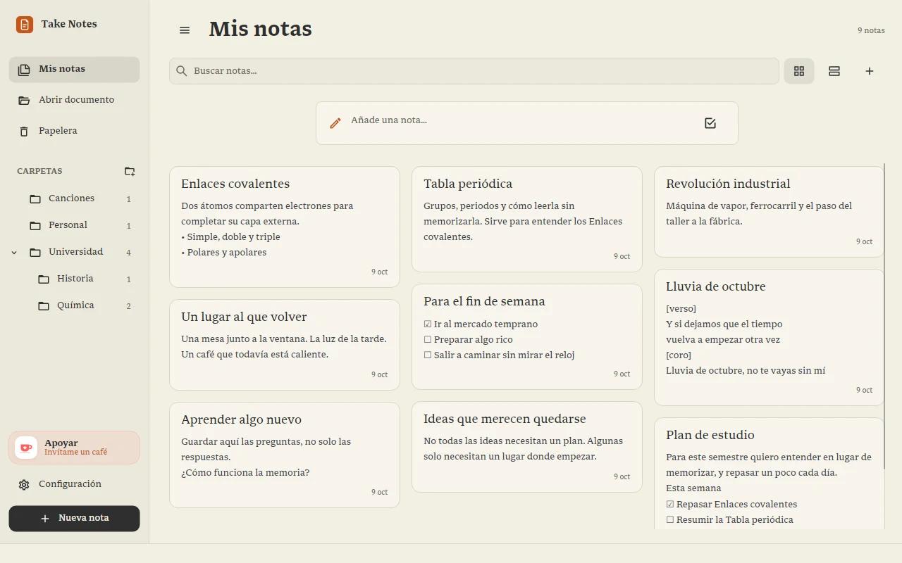
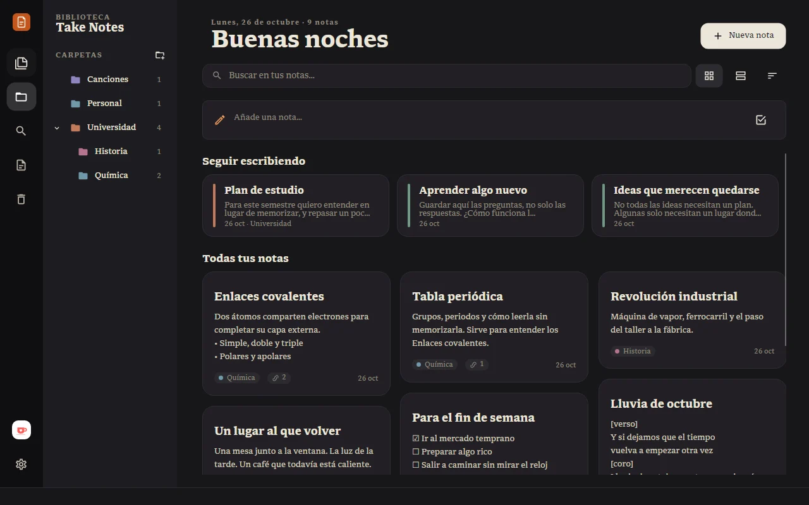
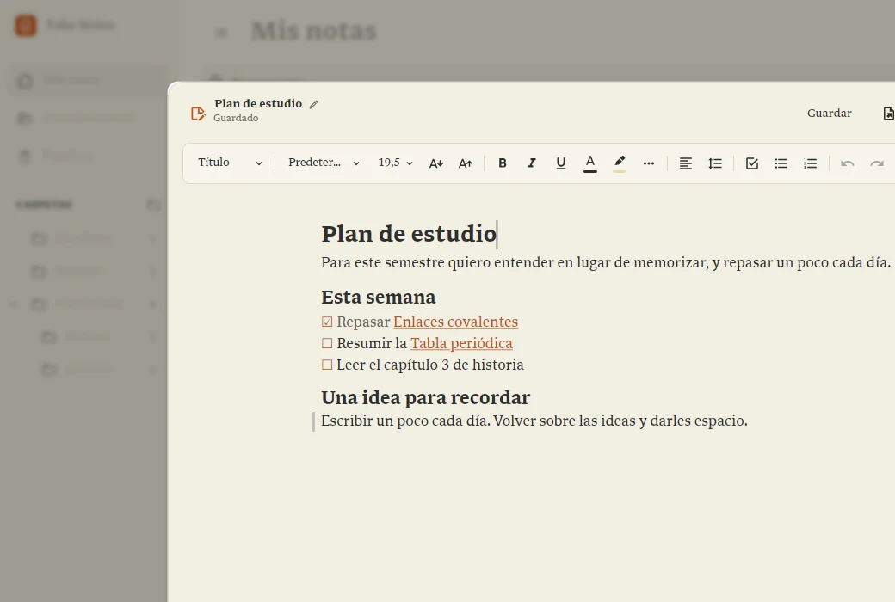
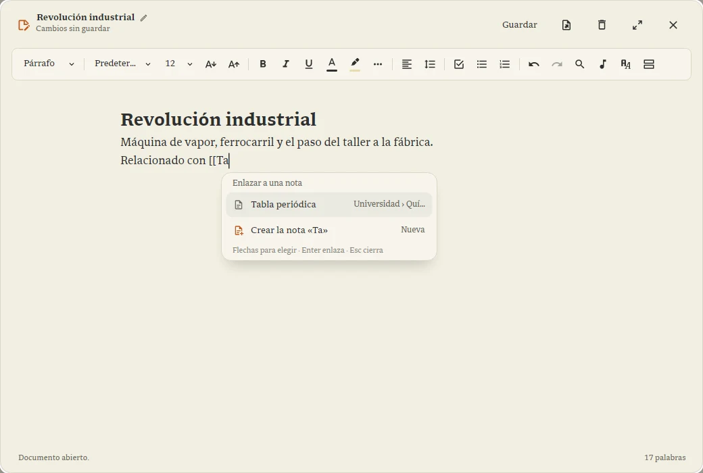
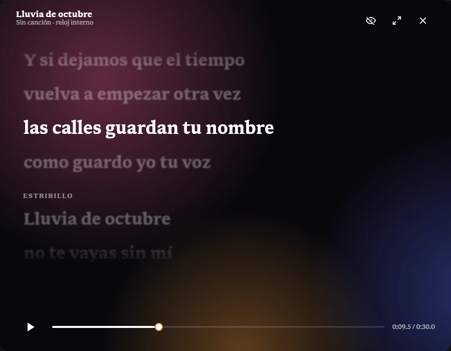
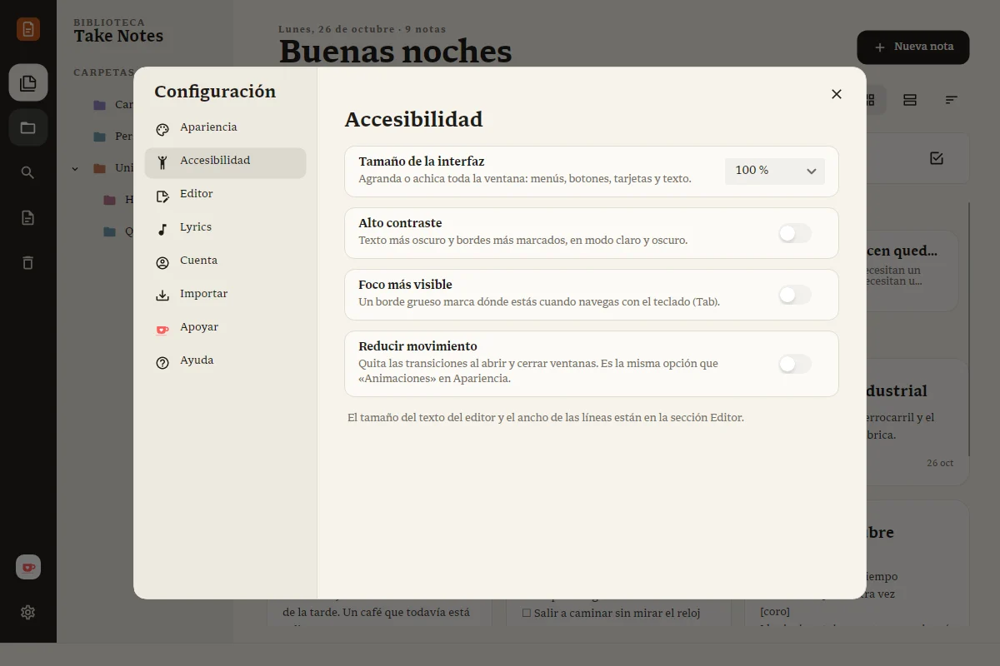
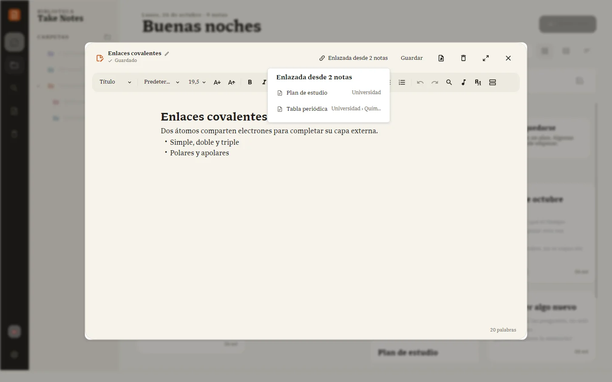

Gratis, sin anuncios
Take Notes no vende tus datos ni te muestra publicidad. Lo sostienen las personas que lo apoyan.
Tus notas, tus listas y las letras de tus canciones en un solo texto que fluye, conectadas entre sí. Gratis, sin anuncios y con tus notas guardadas en tu computador.


Lo que esperas de un procesador de textos, con la calma de una libreta. Nada que distraiga de lo que estás escribiendo.




Nuevo en 0.9.1
Escribe [[ y elige la nota que quieres enlazar. El enlace sigue funcionando aunque la renombres o la cambies de carpeta, y cada nota te muestra cuáles la mencionan. Es el primer paso para ver tus ideas como un mapa.

Para músicos
Adjunta la canción, marca cada línea con Espacio mientras suena y míralas avanzar a pantalla completa. Escribe entre corchetes lo que no se canta, como [verso] o [coro]: queda en tu nota pero no aparece al reproducir. Para ensayar, componer o cantar sin perderte. Importa y exporta LRC.
Take Notes no vende tus datos ni te muestra publicidad. Lo sostienen las personas que lo apoyan.
Funciona sin conexión y guarda cada nota como un archivo en tu equipo. Exporta a Word, PDF o Markdown cuando quieras.
Sin configuraciones eternas: abres y escribes. Las actualizaciones llegan solas, con sus novedades.
Gratis para Windows y Linux. Una vez instalado, se actualiza solo.
Windows 10 u 11, 64 bits
Descargar instalador Versión portable (.zip)Como Take Notes es nuevo, Windows puede mostrar «Windows protegió su PC». Pulsa Más información y luego Ejecutar de todas formas.
Cualquier distribución de 64 bits. Instala con un comando, sin sudo:
curl -fsSL https://oriontheprogrammer.github.io/TakeNotes-releases/install.sh | sh
Descarga Take Notes en tu carpeta personal, lo agrega al menú de aplicaciones y crea el comando takenotes. Se sigue actualizando solo. Para quitarlo, agrega -s -- --uninstall al final: tus notas no se tocan.
Con la AppImage: dale permiso de ejecución y ábrela con doble clic, o chmod +x TakeNotes.AppImage.
Take Notes es gratis y lo desarrollo yo solo. Cada café ayuda a pagar el servidor y me da tiempo para seguir mejorándolo. Si donas con el correo de tu cuenta, recibes una insignia en la app.
Invítame un café en Ko-fi